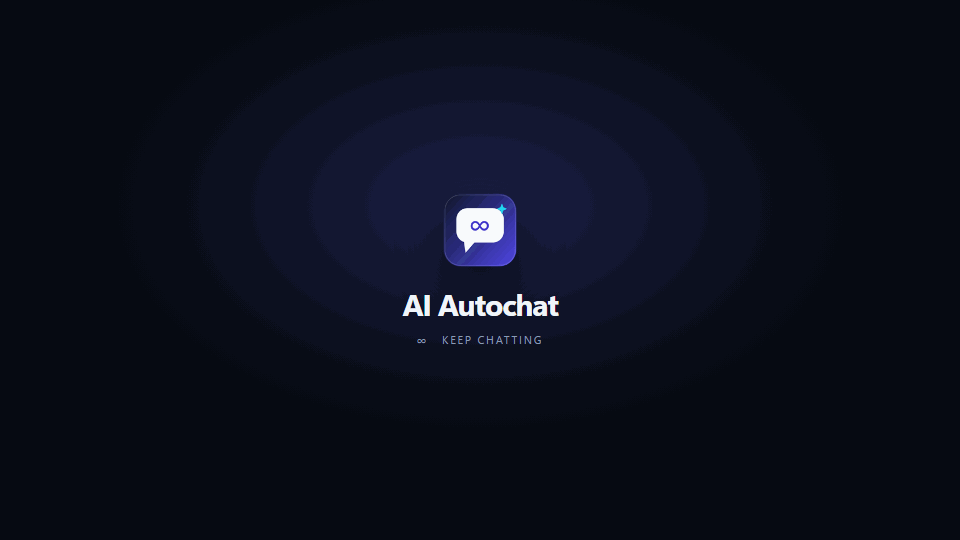

One switch, infinite loop
Flip it on and walk away. The loop keeps going until you pause it, close the tab, or close Edge.
One switch sends a random prompt, waits for the reply, and does it again. Built for the AI tabs you already have open.
A ten-second look at the popup, the on-page chip, and a full prompt-and-reply cycle.

No dashboards, no accounts, no cloud. Just a tiny loop that keeps a conversation moving.
Flip it on and walk away. The loop keeps going until you pause it, close the tab, or close Edge.
A shuffled bag of 71 short prompts, plus your own lines. No immediate repeats, no clever prompt engineering.
It watches the provider’s stop button before moving on, with a configurable timeout as a fallback.
The popup shows each open AI tab and its live state. Click a row to jump straight to it.
No analytics, no servers, no account. Settings stay in chrome.storage.local.
Site adapters are plain data. Add a provider or repair a selector in a few lines. MIT licensed.
Open edge://extensions, enable Developer mode, and load the unpacked folder.
Sign in to ChatGPT, Gemini, Claude, Copilot, or any of the other supported sites.
Pick a delay, turn it on, and leave the tab open. The first prompt goes out in seconds.
Built-in prompts are short and friendly. Mix your own in Messages & options → Custom messages.
Hey! Tell me a fun fact in one sentence.
∞What’s something surprising about the ocean?
∞Give me a random word and a tiny poem about it.
∞What’s a simple way to brighten someone’s day?
∞Paste one prompt per line for custom messages. The extension uses the first 200 lines, up to 1,000 characters each.
Selectors are best-effort. If a provider ships a redesign, the fix lives in one config file.
The extension is unpacked, not store-published. Edge will show a developer-mode reminder after restarts; that is normal for a local build.
Clone the repository or download the release ZIP.
Open edge://extensions and enable Developer mode.
Choose Load unpacked and select the folder containing manifest.json.
git clone https://github.com/Aritra-01/ai-autochat.gitai-autochat/ as an unpacked extension.This automates your own logged-in browser session. Automated activity may violate a provider’s terms, trigger rate limits, or get an account restricted. Keep delays at 20 seconds or more, use it for light personal experiments, and stop if a site asks you to slow down or shows a CAPTCHA.
Not affiliated with OpenAI, Google, Anthropic, Microsoft, Perplexity, xAI, DeepSeek, Mistral, Poe, Alibaba, or Hugging Face. No data collection, no telemetry, no servers.
A star helps other people find a small, weird, open-source thing.